AI Academy · Level 1 · Grade 6 · Week 18 · Student lesson
Confidence Is Not Correctness
Learn to understand, design, build, test and explain AI systems responsibly.
Project: Helpful Classroom Sorter
Before you start
Week 17: a prediction is checked against independent observations.
Plan time to read, investigate and explain. Keep predictions separate from observations.
Student lesson · 1 of 18
Your mission
Start with the target: Distinguish a confidence claim from evidence that a prediction was correct. Try the recall before opening notes.
Your learning target
I can distinguish a confidence claim from evidence that a prediction was correct.
I can compare recorded confidence claims with observed outcomes for a group.
I can explain why a score, a confident sentence and repeated agreement need different checks.
Remember before reading
Close your notes first. A rough first answer helps us choose the right starting point; it is not a score for your ability.
Without opening the old lesson, explain one key idea from Prediction Is Not Fact. Give an example and a mistake that the idea helps you avoid.
Without opening the old lesson, explain one key idea from Save New Examples for Testing. Give an example and a mistake that the idea helps you avoid.
Without opening the old lesson, explain one key idea from Debug the Cause. Give an example and a mistake that the idea helps you avoid.
After trying, check the relevant lesson or ask your teacher. Change the part of your explanation that the evidence shows was wrong.
A system can be very confident and still be wrong.
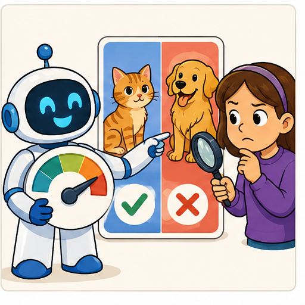
Your target
LEARNING TARGET A helper says 'definitely correct' on four answers; only two match the answer key. A cautious helper gives the same four answers. Which is more accurate?
What additional evidence would you need to compare confidence quality?
Learner name:
Readiness for the connected explanation
A prediction says far and sounds very certain. No travel distance has been recorded. Can you mark it correct? Explain what is missing.
This week’s end goal
By the end, I can explain why a confidence score is not a guarantee and account for missing outcomes.
Student lesson · 2 of 18
Notice the evidence
Investigate the supplied Confidence Is Not Correctness case. Separate observations, given facts and assumptions before choosing an explanation.
PICTURE STORY
Look Closely Before You Explain
Pictures give clues; evidence tells us what the clues mean.

Start with this puzzle
MYSTERY A classifier assigns 95 percent confidence to 'dog' for a toy fox but the verified label is fox.
What do you notice?
Name three visible details without explaining them yet.
Circle the detail most connected to the system's decision.
Name one detail that may be decoration or distraction.
Make a first prediction and state the clue that supports it.
My observations, prediction, and evidence:
Thinking habit
GOOD THINKING A prediction can change when stronger evidence appears.
A closer explanation
A prediction can be expressed strongly and still be wrong. Confidence describes a claim about support or likelihood; correctness is checked against evidence.
Keep the prediction, the confidence claim and the observed outcome in separate columns. None can replace the others.
A display reading 80 might mean 80 out of 100 points for matching features, an estimated 80 percent chance of a specified event, or something else. Read its definition before interpreting it.
The number alone does not tell you which meaning applies. A sentence such as definitely far is not a measured probability.
Ramp1 from Week 17 produced categories using a threshold. It supplied no probability estimates. We must not attach a probability merely because the height is far from that threshold.
This week uses fictional forecast records with an explicitly stated probability claim; we are checking those claims, not inventing them for Ramp1.
Student lesson · 3 of 18
See how it works
Follow the mechanism for Confidence Is Not Correctness. Connect each labelled input, deciding step and result.
VISUAL MECHANISM
Input → Process → Output
Follow the information instead of imagining magic inside the machine.
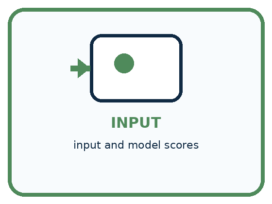
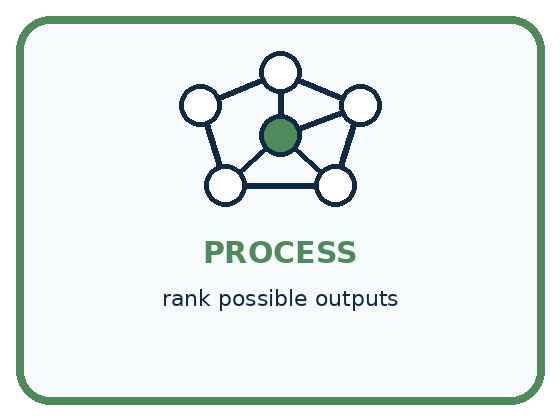
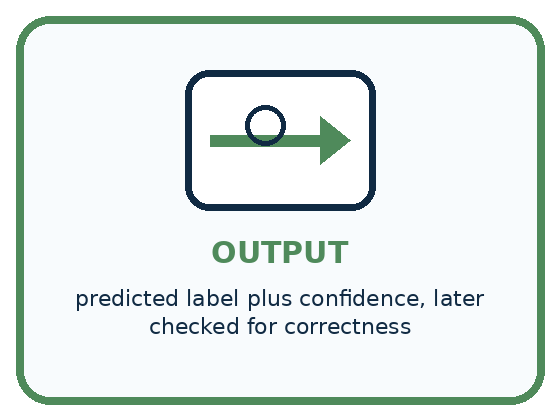
INPUT input and model scores
PROCESS rank possible outputs
OUTPUT predicted label plus confidence, later checked for correctness
Key idea
CORE IDEA A system can be very confident and still be wrong.
How the mechanism works
UNDER THE HOOD Confidence is model-relative strength, not a calibrated probability of truth unless validated. Distribution shift, bad labels, missing classes, or overfitting can produce high-confidence errors.
Draw a fresh example with all three stages:
A closer explanation
Claims and results are separate records
An 80 percent claim means an estimated chance of 80 out of 100, for the event that was named. Across many relevant cases carrying that claim, a well-calibrated method should be correct about that often.
It does not promise exactly eight successes in every ten cases or tell us which cases will fail.
Eight correct out of ten agrees numerically with 80 percent in this small group. Five out of ten is lower. Both are observations worth reporting; neither small group alone establishes how dependable the method will be.
Larger relevant checks, independent of model fitting and score adjustment, give a stronger basis for judging the claim.
Connect the picture and the explanation
Point to the input, the deciding step and the result in this week’s visual. Explain the same step in ordinary words. A picture helps when you can say what each part represents.
Student lesson · 4 of 18
Compare the cases
Compare the supplied cases for Confidence Is Not Correctness. Identify the detail that changes the conclusion.
PICTURE GALLERY
Four Cases, Four Clues
Use the visual cue, then read the evidence carefully.
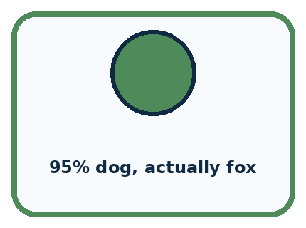
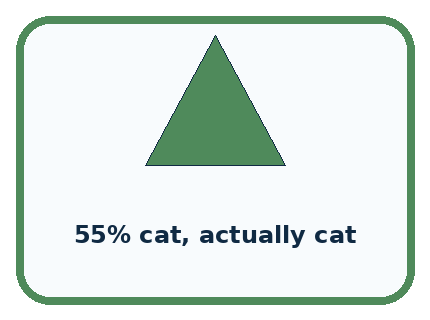
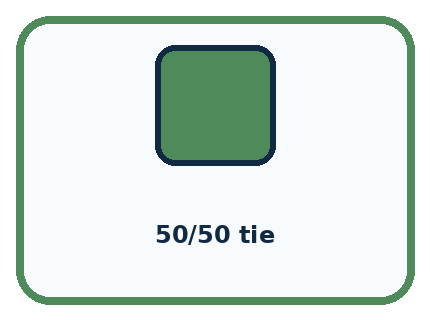
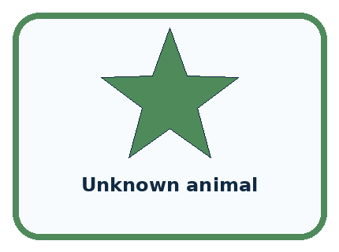
The case to investigate
CASE 1 — 95% dog, actually fox Clue: strong wrong output. Meaning: confident error.
The case to investigate
CASE 2 — 55% cat, actually cat Clue: weak correct output. Meaning: cautious correct.
The case to investigate
CASE 3 — 50/50 tie Clue: competing outputs. Meaning: uncertain.
The case to investigate
CASE 4 — Unknown animal Clue: class absent. Meaning: confidence may mislead.
Keep this boundary clear
BOUNDARY Avoid presenting a score as an objective certainty when its meaning has not been validated.
Which two pictures are easiest to confuse? What evidence separates them?
Change one thing in the pictured case
Change one thing
Change: The missing outcome is checked and found incorrect.
Predicted result
Prediction: All-ten agreement is 7/10=70%.
Why the result follows
Reason: There are now three wrong labels and no unknown outcomes.
Student lesson · 5 of 18
Words that unlock the idea
Use the vocabulary of Confidence Is Not Correctness to explain a concrete decision, rather than only memorising definitions.
VOCABULARY
Words You Can See and Use
The badge is a memory cue; the definition does the real thinking work.
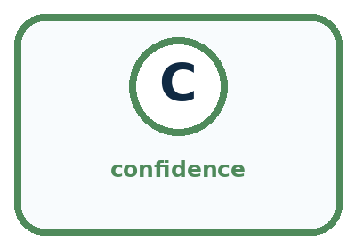
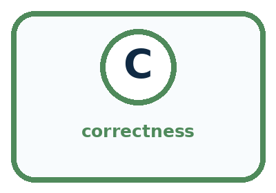
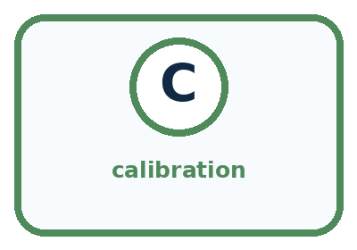
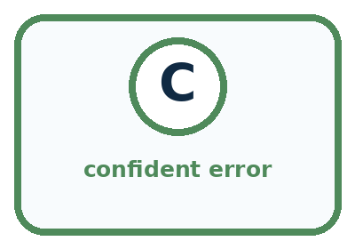
| Word | Meaning | My example |
|---|---|---|
| confidence | strength assigned to an output by a system | |
| correctness | agreement with verified outcome | |
| calibration | how well confidence matches observed accuracy | |
| confident error | wrong result with strong stated confidence |
Misconception detective
Find the unsupported claim
CLAIM TO REPAIR Higher confidence always means more correct.
Use one vocabulary word and one piece of evidence to repair it:
WORD POWER A strong definition helps you decide something in a new case.
Words used in the closer explanation
| Word | Meaning |
|---|---|
| Confidence claim | A statement or number expressing how strongly a prediction is supported according to a stated method |
| Probability estimate | A numerical estimate of how likely a specified event is |
| Score meaning | The definition explaining what a reported number measures |
Student lesson · 6 of 18
Follow a worked example
Follow the worked trace for Confidence Is Not Correctness, predict a step, then compare with its explanation.
WORKED EXAMPLE
Watch the Reasoning, Not Just the Answer
Every step connects a claim to observable evidence.

The case to investigate
CASE A classifier assigns 95 percent confidence to 'dog' for a toy fox but the verified label is fox.
Step 1
STEP 1 — OBSERVE input and model scores
Step 2
STEP 2 — TRACE rank possible outputs
Step 3
STEP 3 — CONCLUDE predicted label plus confidence, later checked for correctness
Model answer
MODEL REASONING Confidence and correctness are separate axes. Only verified outcomes establish correctness. Compare many cases to learn whether confidence is trustworthy; one 95 percent value is not proof.
A claim to avoid
DO NOT OVERCLAIM Avoid presenting a score as an objective certainty when its meaning has not been validated.
What new evidence could change this answer?
A closer explanation
| Case and recorded claim | Observed outcome | Judgment |
|---|---|---|
| A predicts far at 90 percent | Verified near | Incorrect despite high confidence |
| B predicts near at 60 percent | Verified near | Correct despite lower confidence |
| C predicts far at 90 percent | Outcome missing | Unassessed |
Worked explanation · Confidence Is Not Correctness
A high-confidence error and a lower-confidence success can occur even when a probability method is useful. One error does not prove that all confidence estimates are worthless, and one success does not validate a method.
Keep the original scores and investigate patterns across relevant cases.
Worked explanation · Confidence Is Not Correctness
Record the task, model version, event being assigned a probability, score definition and evidence used for checking. If outcomes are missing, report that count.
Do not quietly remove difficult cases or change the confidence values after reading the answers. Adjustments belong to a new recorded method and need a fresh evaluation.
Learn from the worked case
Cover the result before checking it. Say what is given, choose the procedure, and follow one step at a time. Then uncover the result and explain your first mismatch. Ask why a step is allowed, not only what number it produces.
A pictorial worked case: Confidence Is Not Correctness
A fictional card classifier reports a claimed 80% chance that each chosen label is correct.
The facts we will use
Supplied facts
Ten predictions all have score 80%.
Supplied facts
Later checks find 7 correct, 2 incorrect and 1 outcome unavailable. The selected cards were not a representative survey.


Read the picture one step at a time
Why this result follows
Why the result follows
Do not count the missing outcome as correct or silently remove it from the coverage report. These records allow an all-ten agreement range from 70% to 80%.
They do not show that claimed probabilities match checked correctness over many comparable predictions; that requires much more suitable evidence.
What this example does not establish
Keep the stated limit
This small selected set cannot establish that the claimed probabilities match actual correctness or show performance for all future cards.
Keep the stated limit
Read the labelled picture: Was the unknown label guaranteed correct because its confidence was 80%?
Keep the stated limit
Change one thing: The missing outcome is checked and found incorrect. Predict the result before checking the explanation. What remains the same?
Student lesson · 7 of 18
Find and repair a mistake
Find the unsupported step in the Confidence Is Not Correctness claim and explain a repair using the supplied evidence.
COMPARE
Same Result, Different Reason
A comparison helps reveal the true concept boundary.
| Case | Evidence | What it shows |
|---|---|---|
| 95% dog, actually fox | strong wrong output | confident error |
| 55% cat, actually cat | weak correct output | cautious correct |
| 50/50 tie | competing outputs | uncertain |
| Unknown animal | class absent | confidence may mislead |
Repair two tempting claims
Challenge claim A
CLAIM A Higher confidence always means more correct.
Repair:
Challenge claim B
CLAIM B A correct low-confidence answer proves confidence is useless.
Repair:
A frame for explaining
STRONG ANSWER FRAME I claim ______ because the evidence shows ______. The process is ______. One limit is ______.
A closer explanation
Check the claim against the facts
Before relying on a confidence display, ask what its number means, how it was checked on relevant cases and what happens when it is wrong. A feature-match score may help rank options without being a probability.
A generated sentence may sound certain without supplying either a defined score or supporting evidence.
Check the claim against the facts
Repeating a claim does not establish its truth. Several tools can share information and mistakes. Useful checks seek relevant independent evidence and preserve unresolved outcomes.
Review decisions also depend on the consequences of an error; a probability alone does not grant permission to act.
Student lesson · 8 of 18
Practise together
Practise Confidence Is Not Correctness with support, then explain the deciding step in your own words.
GUIDED PRACTICE
Try It, Check It, Explain It
Use support now so you can succeed independently later.

Explain how the picture story demonstrates this idea: A system can be very confident and still be wrong.
Use a fresh example to explain confidence.
Trace a new input → process → output example.
Find and repair the error in: A correct low-confidence answer proves confidence is useless.
Invent one edge case and name the safe response.
Check with a partner
PARTNER CHECK Point to the evidence. Do not accept an answer that only repeats the vocabulary word.
A closer explanation
A fictional classifier records an 80 percent probability that each selected category will be correct on ten reserved cases. All ten outcomes are later established: eight correct and two incorrect.
The report should preserve both the claim and the observed counts. The group supports a comparison, not a guarantee about the next case.
Now suppose two of the ten outcomes were missing. You would need to report which cases were assessed and how many remained unknown, as in Week 17.
A confident-looking percentage does not repair missing observations or make an incomplete sample representative.
Practise with less help: Judge cases using outcomes
Use workbook W2 for the connected example “Confidence and correctness”. First fill the input and rule boxes. Try the middle steps before asking for a hint. After a hint, try the next step yourself.
| Plan | Do | Check |
|---|---|---|
| What is given? Which rule or procedure applies? | Record each intermediate step. | Does the result follow? What remains unknown? |
Explain your trace to a partner. Your partner points to one step to check. Swap roles on the next case. Each person writes their own explanation.
Check your reasoning
Use the worked case for Confidence and correctness. Proposed explanation: “An 80 point score always means an 80 percent probability”. Decide whether this explanation is supported.
Point to the step or supplied fact that decides; explain your repair if needed.
Answer on your own before discussion. If you are unsure, say which step you need help with.
Explain the picture
Was the unknown label guaranteed correct because its confidence was 80%?
This is supported practice. Keep the separately named independent case for an attempt before feedback.
Student lesson · 9 of 18
Run the investigation
Investigate Confidence Is Not Correctness. Record the prediction, actual observation or labelled paper trace, explanation and next test separately.
EXPLORER LAB
Confidence-Correctness Grid
Predict first, test honestly, and explain what the evidence means.

1. Predict
State your prediction before the result is known.
2. Investigate
Complete the task: Compare confident errors with cautious correct answers.
3. Compare cases
Keep a normal case and an edge case clearly separated.
4. Record honestly
Record what happened—even when it does not match your prediction.
5. Explain and plan the next test
Explain the result, one limitation, and the next useful test.
| Case | Prediction | Observed result | What it means |
|---|---|---|---|
| Normal | |||
| Edge |
Use a fresh case after support
INDEPENDENCE After support is removed, repeat the proof with a fresh case.
Plan → try → check
Before trying: what do I expect, and why? While trying: which step could first go wrong? Afterwards: what did I actually observe, and what should change? Keep “not run” if you only traced the procedure.
Student lesson · 10 of 18
Build your understanding
Move from recall to tracing, diagnosis and transfer in Confidence Is Not Correctness. Explain why each step is justified.
PRACTICE LADDER
Climb from Recall to Defense
Each step asks for a stronger kind of understanding.

RECALL Define confidence.
EXPLAIN A system can be very confident and still be wrong.
TRACE Show the input, process, and output.
DIAGNOSE Repair: Higher confidence always means more correct.
TRANSFER Apply the idea to a new home or classroom case.
CREATE Design one revealing test.
DEFEND Give a claim, evidence, mechanism, limit, and safe action.
When to retry
RETRY RULE A coached answer becomes mastery only after you solve a different case independently.
Student lesson · 11 of 18
Connect your project
Apply this week’s idea to Helpful Classroom Sorter. Keep an annotated decision and the evidence supporting it.
PROJECT
Helpful Classroom Sorter
Build one coherent system across the year, one evidence-based decision at a time.

THIS WEEK'S CHECKPOINT Record both the sorter's confidence wording and the human-confirmed outcome; keep them in separate columns.
What real classroom need does this serve?
What information is necessary—and what should stay private?
What happens inside the process?
What normal and edge cases will you test?
When should it say not sure or ask a person?

Responsible design
RESPONSIBLE DESIGN Avoid presenting a score as an objective certainty when its meaning has not been validated.
My project decision:
Evidence for your project
Keep sorter scores, reference outcomes and missingness separately; use review policies instead of treating high scores as facts.
Student lesson · 12 of 18
Show what you know
Use a genuinely new case for independent evidence. Previously discussed examples remain practice; use the separately named independent case before feedback.
MASTERY
Fresh-Case Independent Proof
Complete this after teaching and guided practice have ended.

What success looks like
REQUIRED PROOF Place four outputs on a confidence-versus-correctness grid and explain why high confidence cannot replace checking.
□ Name or draw the fresh case.
□ Trace input, process, and output.
□ State the conclusion and strongest evidence.
□ Name one limit, failure, missing clue, or fairness/privacy concern.
□ Explain one safe next action or improvement.
Independent evidence:
Check your explanation
SELF-CHECK Confidence and correctness are separate axes. Only verified outcomes establish correctness. Compare many cases to learn whether confidence is trustworthy; one 95 percent value is not proof.
My level: □ Not yet □ With one hint □ Independently □ I can teach it
Connect to the next lesson
NEXT BRIDGE Carry today's evidence habit into: Similarity.
Student lesson · 13 of 18
Study a complete case
Revisit the complete Confidence Is Not Correctness case for supported practice. Repeated examples do not become fresh assessments.
Week 18 Worked case
Use the supplied details to practise the weekly concept before attempting the independent question. This case extends the illustrated lesson.
The situation
A helper confidently labels a blurred dog photo as cat; the clear original shows a dog.
The question
What does this show?
Worked explanation
Confidence and correctness differ. A confident error remains wrong. Check evidence, particularly unfamiliar or low-quality inputs.
Explain it in your own words
Which detail supports the answer, and why does it matter?
Trace the supplied case visually
Confidence cannot replace evidence
| Evidence or stage | Value or result |
|---|---|
| Blurred image | Helper confidently says cat |
| Clear original | Actually a dog |
| Conclusion | Confident prediction was wrong |
A helper confidently labels a blurred dog photo as cat; the clear original shows a dog.
What does this show?
Confidence and correctness differ. A confident error remains wrong. Check evidence, particularly unfamiliar or low-quality inputs.
Student lesson · 14 of 18
Try a new case independently
Attempt the reserved new case before feedback. Record support; the earlier examples below remain additional practice.
Independent case: Audit a different probability claim
A fictional leaf sorter claims a 75 percent probability of correctness for each of eight chosen labels. Later evidence establishes six correct labels, one incorrect label and one missing outcome.
A report says six out of eight proves perfect calibration and guarantees the next label. Repair the report, state the assessed and unassessed counts, and describe a better follow-up check.
Attempt this case before feedback. Record any help. Earlier examples below are further practice; a case already practised with feedback cannot establish fresh transfer.
Week 18 Independent application
Close the worked explanation. Apply the idea to this different question without copying.
A sorter is very confident that a leaf is a coin, but a person checks and sees a leaf. Which determines correctness: confidence or the checked object? Why?
My answer, with a trace, calculation or supporting evidence
Create and test
Change one relevant detail. Predict the result before testing. Include a boundary or missing-information case when it helps reveal a limit.
My changed input and expected result
Connect to your project
Record both the sorter's confidence wording and the human-confirmed outcome; keep them in separate columns.
The evidence I will keep
Your teacher has the independent answer and scoring criteria. Complete the matching workbook week to keep your practice evidence together.
Transfer practice from the original programme
A helper says 'definitely correct' on four answers; only two match the answer key. A cautious helper gives the same four answers. Which is more accurate? What additional evidence would you need to compare confidence quality?
Use feedback to improve
Attempt the independent case before hints. Record whether you worked alone, used a hint or followed a model. After feedback, fix the first unsupported step and explain why it changed.
A later check uses a changed case, not a copied answer.
Student lesson · 15 of 18
Your lesson route
Use this map to navigate Confidence Is Not Correctness, connect the goals to tasks and keep one evidence record for each attempt.
Start with this question: A fictional card classifier reports a claimed 80% chance that each chosen label is correct.
| By the end, I can | How I will show it |
|---|---|
| Distinguish a confidence claim from evidence that a prediction was correct | Explain the deciding step, show a trace or test, and state one limit. |
| Compare recorded confidence claims with observed outcomes for a group | Explain the deciding step, show a trace or test, and state one limit. |
| Explain why a score, a confident sentence and repeated agreement need different checks | Explain the deciding step, show a trace or test, and state one limit. |
Remember → watch and explain → try with help → investigate → try independently → keep project evidence. Your teacher may spread this lesson across several classes.
Keep your first prediction. Compare it with what the evidence shows and explain any change.
Student lesson · 16 of 18
Finish and return
Explain Confidence Is Not Correctness without notes, identify a remaining question and plan a later check with a changed case.
Close your notes. Explain this goal in your own words: Distinguish a confidence claim from evidence that a prediction was correct
If you are unsure, return to the worked picture and explain one arrow. If you are ready, change an input or assumption and justify your prediction.
Save your workbook evidence. At the next review, try a different case before opening your old answer.
Student lesson · 17 of 18
Supported practice, repair and portfolio
Attempt supported questions before using hints or feedback. Review a missing building block, then keep the completed work.
Use this supported practice once, in the browser or on paper. Keep the reserved independent assessment for a separate first attempt before teacher feedback.
A fictional card classifier reports a claimed 80% chance that each chosen label is correct.
Practice 1: explain the deciding evidence
Which labelled step matches this detail? The missing result could change the all-ten correct count to 7 or 8.
1. Checked outcomes
2. Report coverage
3. Retain unknown
4. Keep scores
Hint · try first
Hint if needed: Read the steps in the pictorial case. Match the supplied detail to the stage that performs or records it.
Feedback · compare after trying
After your attempt, compare with the supported explanation: Retain unknown The missing result could change the all-ten correct count to 7 or 8.
Do not count the missing outcome as correct or silently remove it from the coverage report. These records allow an all-ten agreement range from 70% to 80%.
They do not show that claimed probabilities match checked correctness over many comparable predictions; that requires much more suitable evidence.
Practice 2: explain the deciding evidence
Changed case · predict first
Changed-case practice: The missing outcome is checked and found incorrect. Which conclusion is supported by the supplied facts?
1. This one example guarantees correct results for every future input.
2. We can decide the result without examining the changed input or the procedure.
3. All-ten agreement is 7/10=70%.
Hint · try first
Hint if needed: Use the changed condition and the deciding step in the pictorial trace. The answer must say what follows from those facts.
Feedback · compare after trying
After your attempt, compare with the supported explanation: All-ten agreement is 7/10=70%. There are now three wrong labels and no unknown outcomes.
Repair a missing building block
Review Prediction Is Not Fact (ai-1/17). Goal: Separate a recorded prediction from the observation used to check it. Short practice: Which field changes the observation label, and which field changes the model prediction?.
Return to this week and explain what you changed.
Review Save New Examples for Testing (ai-1/15). Goal: Separate examples used to choose a model from examples reserved for its final evaluation. Short practice: Does 4/4 on the replay replace the original 3/4 result? Explain..
Return to this week and explain what you changed.
Review Debug the Cause (ai-1/12). Goal: Compare expected and observed traces to locate the first difference. Short practice: Propose input 0 and give both predicted outputs without inventing an observed result..
Return to this week and explain what you changed.
Keep your completed work
Use Download completed work in the hosted lesson to export your answers, reflections, practice feedback and code-run evidence. Open the HTML copy to read or print it.
Drafts stay in this browser when storage is available; clear drafts on a shared device.
Student lesson · 18 of 18
Visual concept journey
Explain each Confidence Is Not Correctness graphic using its labels, deciding evidence and relevant limitation.
01. Confidence Is Not Correctness: the case

A fictional card classifier reports a claimed 80% chance that each chosen label is correct. Supplied facts: Ten predictions all have score 80%. Later checks find 7 correct, 2 incorrect and 1 outcome unavailable.
The selected cards were not a representative survey.
Point to the given fact that matters most. Explain why it matters.
02. Follow the deciding steps

Keep scores: Ten chosen labels each carry 80%; this is a claim about uncertainty. → Checked outcomes: Seven correct plus two wrong gives nine known outcomes. → Report coverage: Observed agreement is 7/9 among checked cards; outcome coverage is 9/10. → Retain unknown: The missing result could change the all-ten correct count to 7 or 8.
Point to each numbered stage and explain which recorded input it uses.
03. Known outcomes and missing evidence

Known outcomes and missing evidence. Units: predictions. Correct: 7. Incorrect: 2. Unknown: 1.
Read the labels and values. Explain the relationship the model shows.
04. Change one thing. Trace what follows.

Original case: The missing result could change the all-ten correct count to 7 or 8. Changed condition: The missing outcome is checked and found incorrect. Expected result: All-ten agreement is 7/10=70%.
Reason: There are now three wrong labels and no unknown outcomes.
Predict before checking the worked changed-case result. Name what changed and what the supplied facts allow you to conclude.
05. Connect the explanation to its limit

Do not count the missing outcome as correct or silently remove it from the coverage report. These records allow an all-ten agreement range from 70% to 80%.
They do not show that claimed probabilities match checked correctness over many comparable predictions; that requires much more suitable evidence.
Limit: This small selected set cannot establish that the claimed probabilities match actual correctness or show performance for all future cards.
Explain the case, then point to a limit on the claim.
06. Make the idea visible in your project

Keep sorter scores, reference outcomes and missingness separately; use review policies instead of treating high scores as facts. Draw your input, deciding step, result and limit.
Supported question: Was the unknown label guaranteed correct because its confidence was 80%?
Draw your project trace and justify the deciding step using evidence.